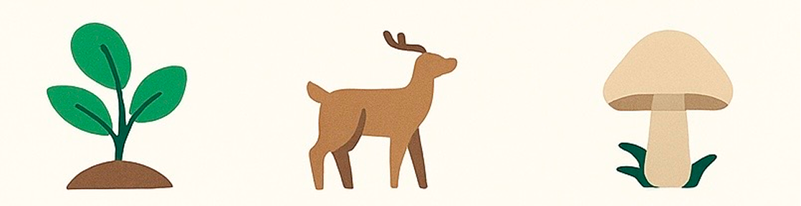

Cadeias e
Teias Alimentres
Entendendo as relações de energia nos ecossistemas
Níveis Tróficos
1 Produtores
São os organismos que captam elementos diretamente do ambiente, como água, gás carbônico ou minerais do solo.
2 Consumidores
São os seres vivos que se alimentam de outros organismos e absorvem os elementos químicos por meio da alimentação.
3 Decompositores
São os organismos que decompõem a matéria orgânica de seres vivos mortos e devolvem os elementos ao ambiente.
Cadeia Alimentar: Passando Energia
A energia do sol passa dos produtores para os consumidores e depois para os decompositores. A cada etapa, parte da energia é usada, mantendo o equilíbrio da vida no ecossistema.
Teia Alimentar: Várias Cadeias conectadas
A teia alimentar mostra como várias cadeias alimentares se conectam, revelando as relações entre os seres vivos e como eles dependem uns dos outros para sobreviver.
Habitat e Nicho Ecológico
Habitat
- É o local onde um organismo vive.
- Fornece abrigo, alimento e condições ideais.
- Pode ser uma floresta, rio, lago, solo etc.
- Vários organismos podem compartilhar o mesmo habitat.
Nicho Ecológico
- É o papel que o organismo exerce no ecossistema.
- Inclui sua alimentação, reprodução e comportamento.
- Define como ele interage com outros seres vivos.
- Dois organismos com nichos iguais competem entre si.
Dicas para o Vestibular
Habitat = lugar onde vive.
Nicho = função que ele exerce.
Confundir esses dois é um dos erros mais comuns em provas!